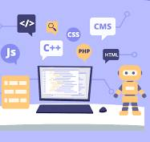

The Importance of Programming in the Moder Era
Programming has become an essential skill in our digital world, playing a key role in app development, artificial intelligence, and process automation. It helps solve problems creatively and opens vast career opportunities. Learning programming not only provides job prospects but also enhances logical and creative thinking, making it a crucial skill for the future
How to Improve Your Programming Skills?
Improving your programming skills requires continuous practice and learning. Start by solving coding challenges on platforms like LeetCode, and work on real projects to enhance your experience. Review professional developers' code on GitHub and follow courses and tech articles to stay updated. The most important thing is consistency— the more you code, the better you get!
Learn Programming from Scratch

Programming has become a fundamental skill in our modern era, as it plays a role in all fields of modern technology. Whether you want to work as a software developer, develop your own projects, or even understand how applications and websites work, learning programming is a very important step. Learning programming from scratch can be challenging, but it is an enjoyable and rewarding journey. Keep learning, do not be afraid of mistakes, and apply what you learn in real projects. Within just a few months of practice, you will be able to build strong skills that qualify you to work in this exciting field.